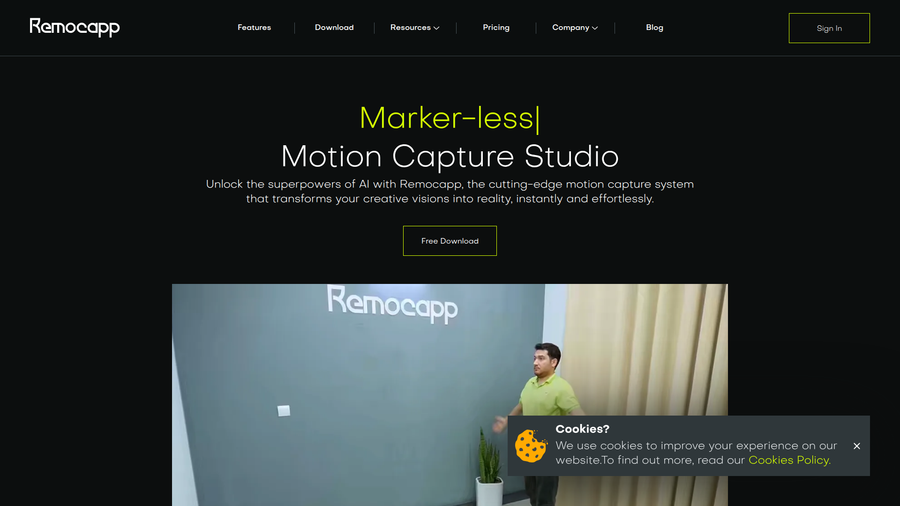

← 返回首頁
ReMoCapp — 深度調研報告
1. 工具概述
ReMoCapp 是一款 AI 即時無標記動捕軟體，使用 2-8 個網路攝影機即時捕捉全身與臉部動作。支援即時串流至 Blender、Unreal Engine、Unity 等主流 DCC 軟體，並可匯出 BVH/FBX 檔案。
核心能力一句話：用 2-8 個網路攝影機做到即時全身+臉部動捕，直接串流到 Blender/UE/Unity。
解決的問題：
- 專業動捕系統昂貴（OptiTrack 數百萬台幣）
- 單攝影機方案精度不足且有遮擋問題
- 需要「即時」動捕且能直接串流到 DCC
- 需同時捕捉全身和臉部
- 不想穿戴任何追蹤裝置

2. 功能詳細說明
功能矩陣
| 功能 | 說明 |
|---|
| 即時動捕 | 低延遲即時追蹤和輸出 |
| 2-8 攝影機 | 多角度提升精度和遮擋處理 |
| 全身追蹤 | 全身骨架（含手指基礎） |
| 臉部追蹤 | ARKit 相容 Blend Shapes |
| 即時串流 | 直接串流至 Blender/UE/Unity |
| BVH 匯出 | 標準 BVH 格式錄製輸出 |
| FBX 匯出 | FBX 格式輸出 |
| 無標記 | 無需穿戴追蹤設備 |
| 內建校準 | 軟體內建攝影機校準工具 |
| 多人追蹤 | 支援多人同時追蹤 |
技術規格
| 項目 | 規格 |
|---|
| 攝影機 | 2-8 個 USB 網路攝影機 |
| 即時性 | ✅ 即時（低延遲） |
| 身體關節 | ~50+（含手指） |
| 臉部 | ARKit 52 Blend Shapes |
| 輸出協議 | Live Link（UE）/ OSC / 自訂 |
| 檔案格式 | BVH / FBX |
| 系統 | Windows |
| 硬體需求 | 多 USB 攝影機 + 高效能 CPU/GPU |
| 校準 | 內建（棋盤格式） |
| 串流目標 | Blender / Unreal Engine / Unity |
3. 官方影片/教學連結
| 主題 | 連結 |
|---|
| 官方網站 | https://remocapp.com/ |
| 教學/展示影片 | 官網內嵌 |
| 社群/論壇 | 官網提供 |
4. 安裝/使用流程
硬體準備
- 準備 2-8 個 USB 網路攝影機（1080p 建議）
- USB Hub 或多 USB Port 主機
- 攝影機支架和固定裝置
- 設計攝影機擺放位置（圍繞表演空間）
軟體安裝
- 購買 ReMoCapp 授權
- 下載安裝軟體（Windows）
- 連接所有攝影機
- 軟體偵測並列出可用攝影機
校準流程
- 使用軟體內建校準工具
- 舉棋盤格在各攝影機視野中移動
- 軟體計算攝影機相對位置
- 確認校準品質
動捕使用
1. 選擇追蹤模式（全身/全身+臉部）
讓表演者站到拍攝區域
開始追蹤 → 即時預覽
選擇輸出方式：
- 即時串流到 Blender/UE/Unity
- 錄製為 BVH/FBX 檔案
錄製完成 → 匯出檔案
5. 定價與授權
| 方案 | 價格（估計） | 說明 |
|---|
| 個人版 | ~$200-500 USD | 基礎功能 |
| 專業版 | ~$500-1000 USD | 完整功能 + 多人追蹤 |
| 企業版 | 客製報價 | 批量授權 + 支援 |
商用授權說明：
- 購買即可商用
- 按版本/座位授權
- 輸出的動畫資料歸使用者所有
- 無月費（一次性購買，含版本更新）
額外硬體成本：
- 網路攝影機 × 4-8：約 $200-800 USD
- USB Hub/延長線：約 $50-100 USD
- 總投入：軟體 + 硬體約 $500-1500 USD
6. 優缺點分析
優點
- ✅ 即時動捕：低延遲，適合互動和表演
- ✅ 全身+臉部：同時捕捉身體和面部，一套搞定
- ✅ 即時串流：直接串到 Blender/UE/Unity
- ✅ BVH/FBX 輸出：標準格式，完全相容
- ✅ 無標記：無需穿戴任何設備
- ✅ 成本合理：比 OptiTrack ($50,000+) 便宜 100 倍
- ✅ 多攝影機精度：比單攝影機方案好很多
缺點
- ❌ 需要空間：需設置 2-8 攝影機的固定空間
- ❌ 校準步驟：雖比傳統簡單但仍需設置
- ❌ Windows Only：不支援 Mac/Linux
- ❌ 多 USB 設備管理：8 攝影機的 USB 頻寬/驅動可能有問題
- ❌ 精度仍不如專業系統：比 OptiTrack 差，但比單攝好
- ❌ 初始投入：需購買多個攝影機和支架
- ❌ 手指精度有限：網路攝影機解析度限制手指追蹤品質
7. 與 Kimodo 的整合可能性
| 比較項目 | ReMoCapp | Kimodo |
|---|
| 輸入 | 表演者即時動作 | 文字 prompt |
| 輸出 | BVH/FBX（即時+離線） | BVH |
| 即時性 | ✅ 即時 | ❌ 離線 |
| 臉部 | ✅ ARKit 52 BS | ❌ |
| 手指 | ⚠️ 基礎 | ❌ |
| 精度 | 中高（多攝影機） | 中高（AI） |
| 成本 | 硬體+軟體 ~$1000 | 軟體 ~$0（開源） |
| 適合場景 | 有演員可即時表演 | 無演員/想像動作 |
推薦整合方式
高品質需求（有演員）：
[演員表演] → [ReMoCapp 即時動捕] → [BVH] → [ARP Remap] → [引擎]
量產需求（無演員）：
[Prompt] → [Kimodo] → [BVH] → [ARP Remap] → [引擎]
混合使用：
[ReMoCapp 錄製參考] → [觀察動作] → [撰寫 Kimodo Prompt] → [量產]
ReMoCapp 適合「有演員、需要即時和臉部」的場景；Kimodo 適合「批次量產、無演員」的場景。
8. 對 AI 動作量產工作流的貢獻定位
定位：即時動捕的中端方案（有演員時使用）
高端：[OptiTrack/Vicon] → [$$$$$] → [最高精度]
中端：[ReMoCapp] → [$$] → [中高精度 + 即時 + 臉部]
低端：[TDPT/單攝影機] → [免費] → [基礎品質]
AI 端：[Kimodo] → [免費] → [中高品質，無需演員]
量產流程中的角色：
- 特殊動作錄製（需要真人表演參考時）
- 臉部動捕來源（ARKit BS 可直接用於 FaceIt 系統）
- 即時預視和互動場景
- 非日常工具，是「需要時才用」的特殊工具
9. 總結評分
| 項目 | 評分 | 說明 |
|---|
| 動作品質 | ⭐⭐⭐⭐ | 多攝影機精度不錯 |
| 易用性 | ⭐⭐⭐ | 需要設置空間和攝影機 |
| 性價比 | ⭐⭐⭐⭐ | 比專業系統便宜 100 倍 |
| 量產適用性 | ⭐⭐⭐ | 需要演員和空間，非全自動化 |
| 整合便利性 | ⭐⭐⭐⭐⭐ | BVH/FBX + 即時串流 |
| 臉部能力 | ⭐⭐⭐⭐ | ARKit 52 BS，品質好 |
10. 行動建議
- 評估空間和預算：是否有固定空間可設置 4+ 攝影機
- 試用/Demo：聯繫官方取得試用版本
- 定位為特殊工具：非日常使用，當需要真人參考動作時使用
- 重點評估臉部品質：ReMoCapp 的臉部動捕可搭配 FaceIt 使用
- 與 Kimodo 明確分工：ReMoCapp 做「有演員的」，Kimodo 做「無演員的」
參考資料
- 官方網站：https://remocapp.com/